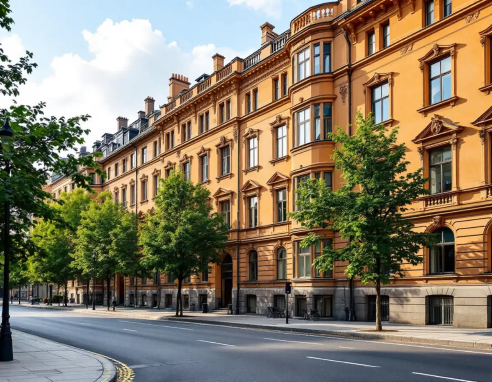
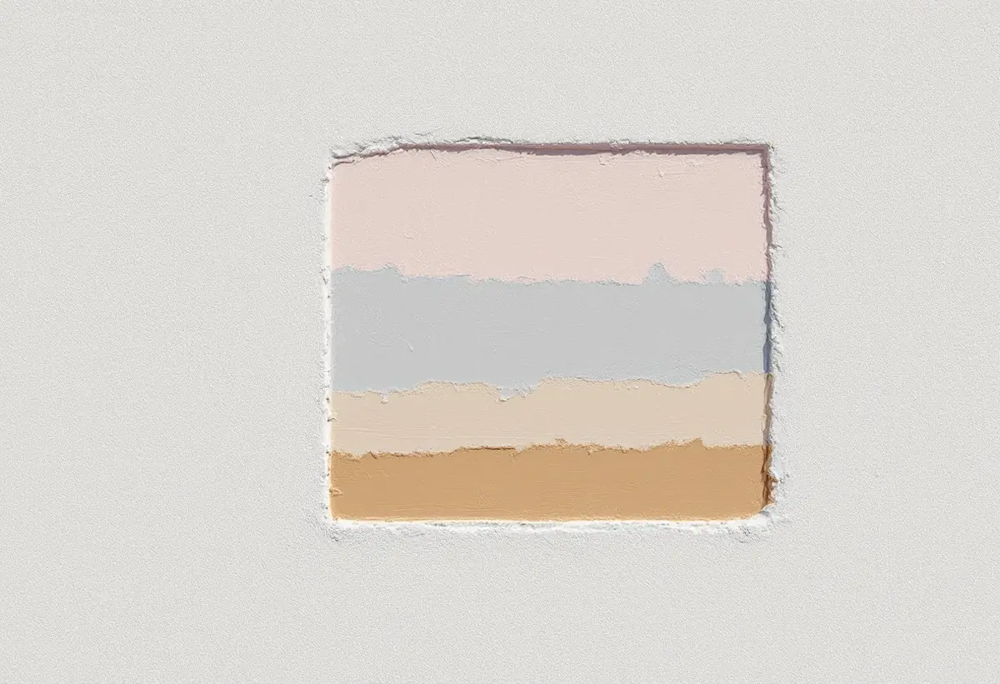
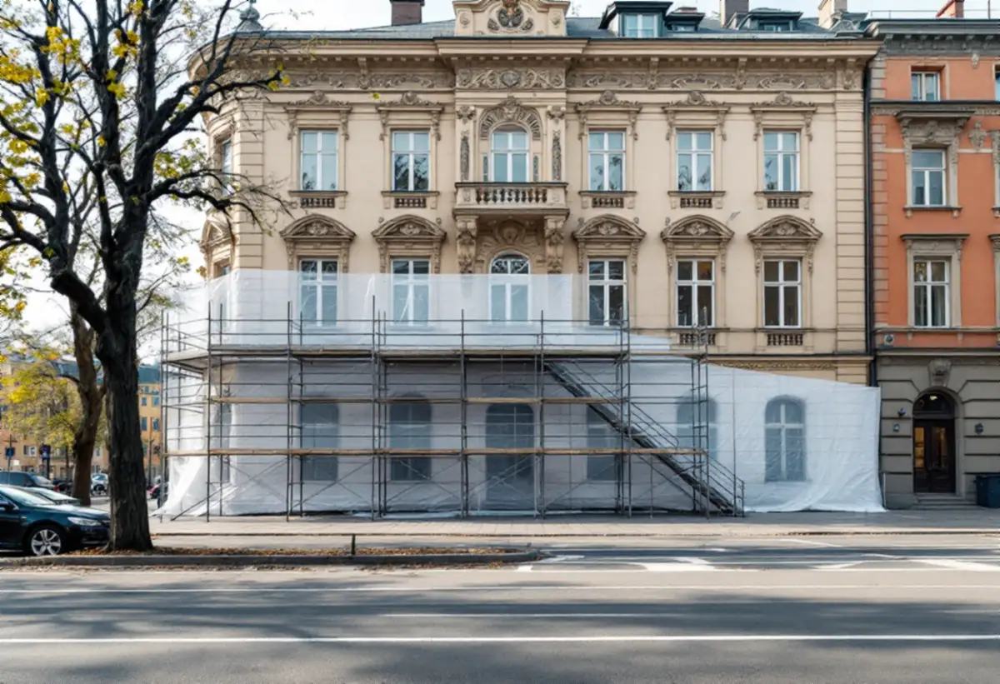

Platsbesök
Fasaderna, putsen och nuvarande färgtyp går vi igenom med styrelsen.
När en förening på Östermalm ska måla om fasaden är en av de första frågorna vilken kulör huset hade från början. Svaret finns ofta i färglagren under den nuvarande färgen. Geal Entreprenad AB målar fasader på flerbostadshus på Östermalm och hjälper styrelsen att ta fram underlaget om kulör, färgtyp och lov.

Östermalm ligger inom riksintresset Stockholms innerstad med Djurgården (AB 115). I stadens beskrivning nämns det sena 1800-talets stadsbyggande med esplanadsystemet, gator av olika bredd och byggnader i bestämda hushöjder, områden planlagda enligt 1874 års byggnadsstadga och den täta och enhetliga stenstadsbebyggelsen. Villastaden räknas också dit.
Bland uttrycken för 1900-talets stadsbyggande nämns Lärkstaden och Diplomatstaden. En fasad på Östermalm är alltså en del av en helhet som är utpekad på nationell nivå, och kulören är en av de saker som syns mest.

Riksantikvarieämbetet skriver att äldre färgsättning och kulörval bör bevaras, eftersom de i regel är typiska för den epok huset kommer från, och att prov på tidigare kulörer i många fall kan hittas genom att blottlägga äldre färglager. Ett litet område skrapas försiktigt ner genom lagren, och kulörerna under dokumenteras.
Myndigheten rekommenderar också att några ytor lämnas helt obehandlade vid en renovering, gärna små och på undanskymda ställen. Sådana provytor är i praktiken den bästa dokumentationen för den som ska välja metod nästa gång, och uppgifter om material och metod bör sparas.
Anses huset ha högt kulturhistoriskt värde råder Riksantikvarieämbetet att man samråder med länsmuseet om val av kulör, pigment och bindemedel. Länsmuseet kan i regel hänvisa till sakkunniga målarmästare och konservatorer eller ge andra råd.
Stockholms stad hänvisar till Stadsmuseets klassificeringskarta för att se om en byggnad är kulturhistoriskt värdefull. På kartan är riksintressen markerade med blå ring och klassad bebyggelse med blått, grönt, gult eller grått, och staden skriver att du behöver söka bygglov för annars lovfria åtgärder om byggnaden ligger inom ett riksintresse eller är markerad med blått eller grönt.
Kartan uppdateras när nya bedömningar görs, så klassningen kan ändras över tid. Vi kontrollerar den aktuella klassningen och detaljplanen innan styrelsen får ett förslag, så att föreningen vet om ett lov behövs och vilket underlag som kan krävas.
Stadens områdesfakta för 2025 visar 5 151 bostadsrätter i flerbostadshus i Hedvig Eleonora församlingsområde och 2 072 övriga hyresrätter, men bara ett par småhus. Den som beställer en fasadmålning på Östermalm är därför i regel en bostadsrättsförening eller en fastighetsägare.
Stockholms stad skriver att det för byggnader som inte är en- eller tvåbostadshus krävs bygglov för fasadändringar på fasad eller tak som vetter mot allmän plats. Ett byte av kulör är en fasadändring, och vi tar därför fram kulörförslaget och fotounderlaget så att det kan användas i en ansökan.
Riksantikvarieämbetet påpekar att man vid ommålning i de flesta fall bör hålla sig till samma färgtyp som tidigare, och att ett byte av färgtyp också ändrar utseendet. På en putsad stenhusfasad tar vi därför reda på vad den är målad med i dag innan färgtypen bestäms.
Om puts och fasadmaterial på Östermalm kan du läsa under fasadrenovering på Östermalm, och om måleri i stadsdelen under målare på Östermalm.

Fasaderna, putsen och nuvarande färgtyp går vi igenom med styrelsen.
Ett litet område skrapas ner och tidigare kulörer dokumenteras.
Stadsmuseets karta och detaljplanen kontrolleras.
Varje fasad, ställning och väderskydd för sig.
Kulörförslag och foton tas fram när kulören ändras mot gatan.
Fasaden målas och provytor och metod dokumenteras.
Skatteverket ger rotavdrag i en bostadsrätt bara för arbete inne i bostaden som bostadsrättshavaren ansvarar för enligt stadgarna. Arbete på gemensamma ytor, till exempel tak och fasader, ger inget rotavdrag.
En fasadmålning på ett föreningshus betalas därför av föreningen utan avdrag, och kostnadsförslaget ställs till föreningen.
Fasadernas yta och höjd, putsens skick, färgtyp, färgundersökning, ställning och väderskydd mot gatan och om bygglov behövs. Efter ett gratis platsbesök får föreningen ett skriftligt kostnadsförslag.
Fasad, fönster och invändig målning.
Målare i Stockholm →Kulturvärden, förvanskningsförbud och klassning.
Badrumsrenovering på Östermalm →Slå ihop två lägenheter.
Byggföretag på Östermalm →Gatufasad, gårdsfasad och lovfrågan.
Fasadrenovering på Östermalm →Stenstaden, Lärkstaden och villorna.
Fönsterbyte på Östermalm →Fönster och glas i Gärdets 1930-talshus.
Fönsterrenovering på Östermalm →Mönsterparkett, lack och olja.
Golvläggare på Östermalm →Slipa om eller underhålla lackade golv.
Golvslipning på Östermalm →Stora lägenheter och kulturvärden.
Köksrenovering på Östermalm →Limfärg i taken, dekor och lov.
Målare på Östermalm →Taklandskapet och balkongerna.
Plåtslagare på Östermalm →Klassade våningar och bostadsrätt.
Tapetsering på Östermalm →